TGCTF2025 Misc
next is the end
多层文件夹，用010查看发现里面有flag.txt
直接用kali识别flag.txt内容
find /起始目录/ -name “flag.txt” -exec cat {} ;
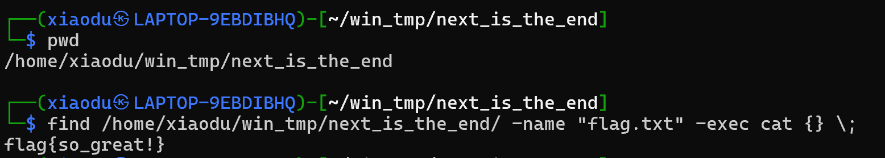
简单签到，关注：”杭师大网安“谢谢喵🐱
关注公众号发送“欢迎参加TGCTF”即可
where it is(osint)
直接截取部分放谷歌
发现一毛一样
点进去看发现一个站点
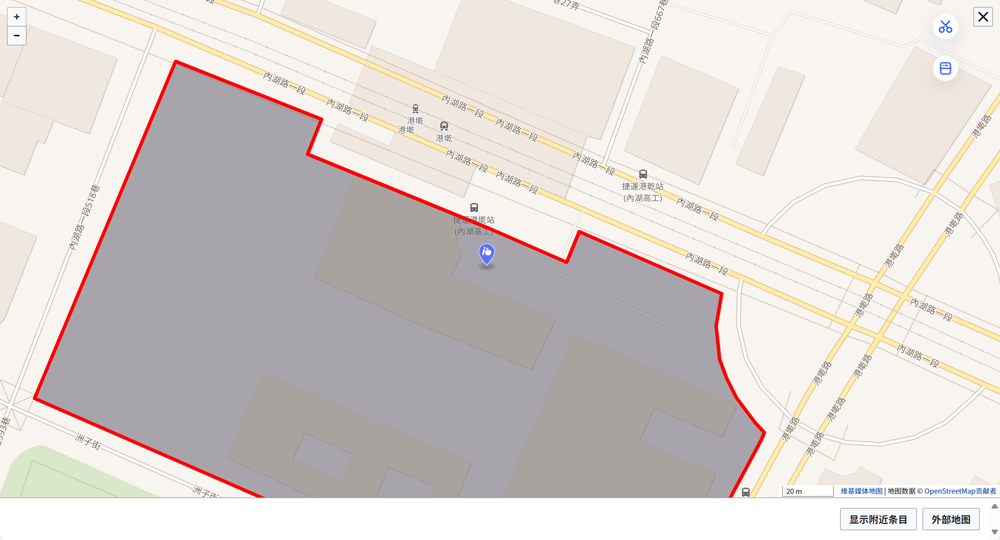
查找轨道路线
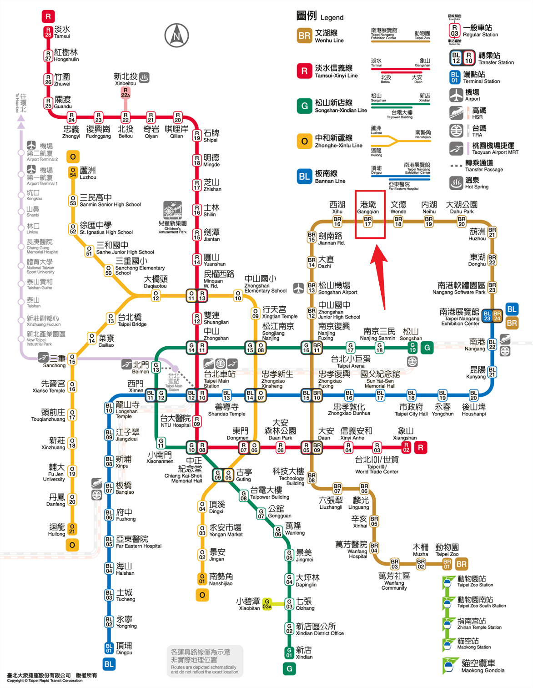
你的运气是好是坏？
??? 试了这么抽象的数字，就出了？
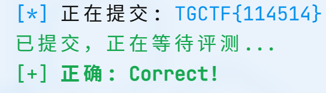
这是啥o_o
刚开始还以为是分离后的gif的隐写，但是尝试后无果
这时想起gif的另一些常见考法-gif帧间隔，用PuzzleSolver提取出帧间隔
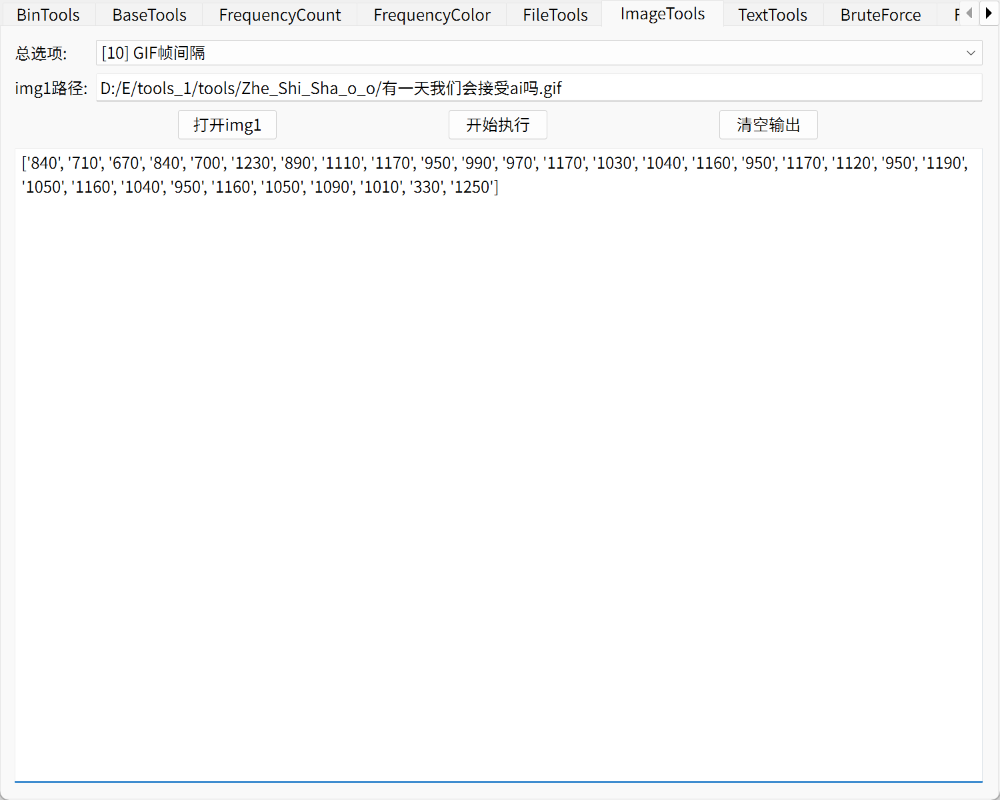
对比了一下，发现84-T,71-G，于是写一个脚本将其转换
1 | l=['84', '71', '67', '84', '70', '123', '89', '111', '117', '95', '99', '97', '117', '103', '104', '116', '95', '117', '112', '95', '119', '105', '116', '104', '95', '116', '105', '109', '101', '33', '125'] |
TeamGipsy&ctfer
非预期，直接查找flag
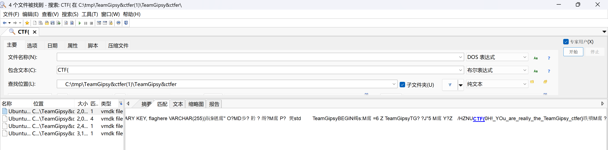
你能发现图中的秘密吗？
第一步，获得key
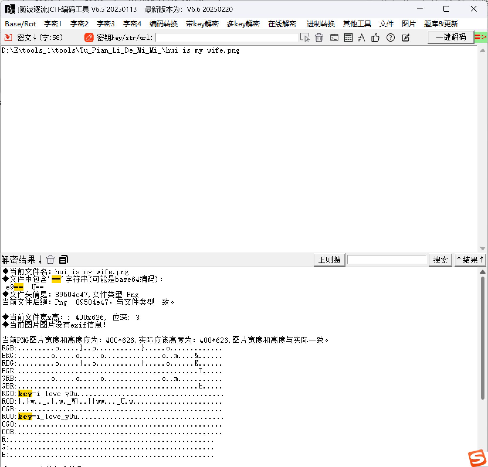
解压发现有一张图片，一个pdf，pdf放ps中发现两个图层，其中一个图层有部分flag
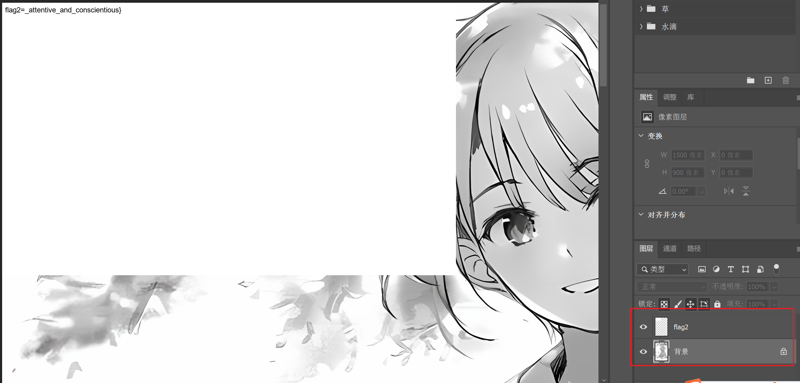
然后在010中打开另一张图片，发现IDAT块有问题
tweak删掉多余的块
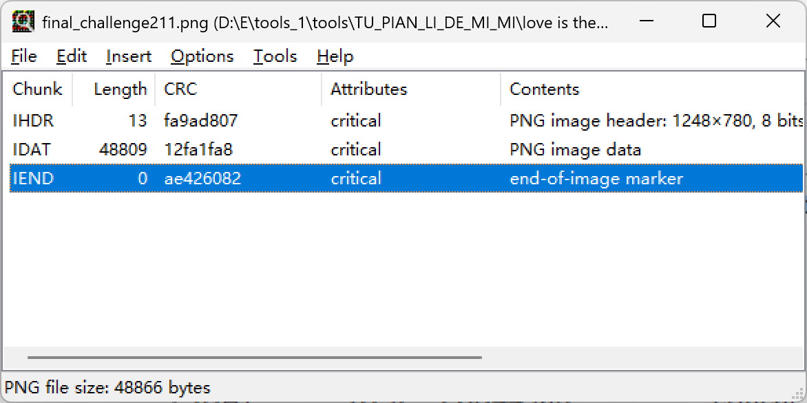
得到一张好像字符错乱的图片，但是放进010没有出现报错，但是还是尝试一下宽高爆破
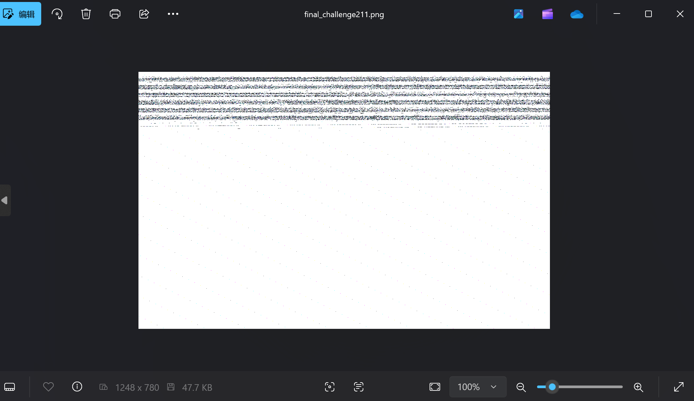
用b神的工具爆破一下宽高
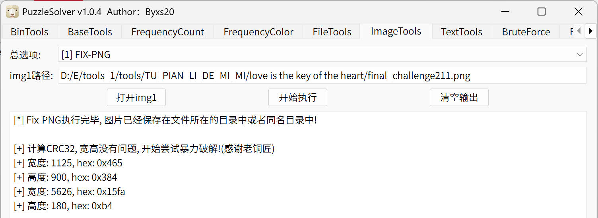
得到第一部分flag
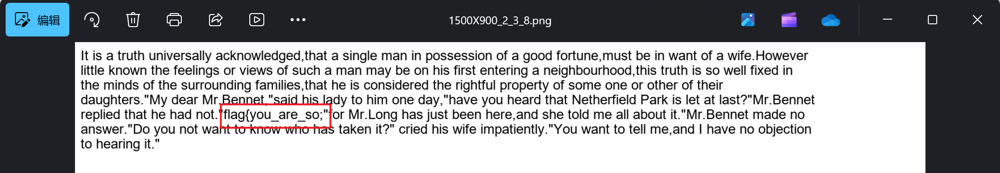
最终flag为：flag{you_are_so_attentive_and_conscientious}
ez_zip
第一步压缩包加密，看了一下不是伪加密，爆破一下得到解压密码
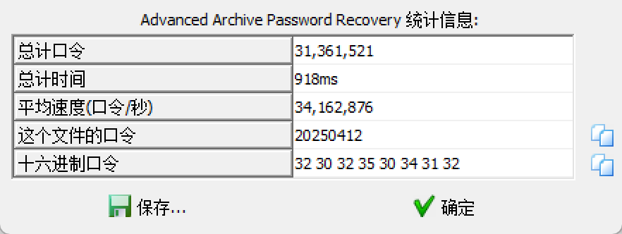
解压后发现一个End.zip文件和sh512.txt，并且End.zip文件里面又有sh512.txt，这时可以猜测为明文攻击，但是对比发现crc不一样，这时从文件名可以判断应该是要将未加密的sh512.txt进行sha512加密
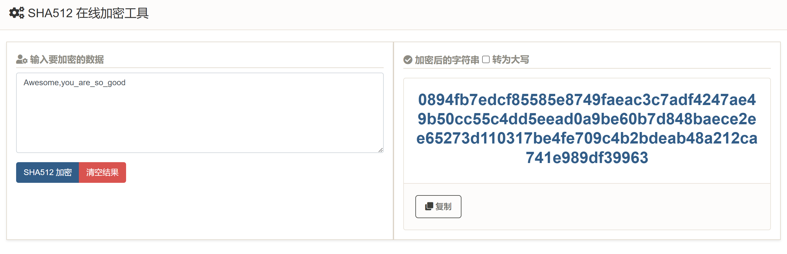
加密后对比crc
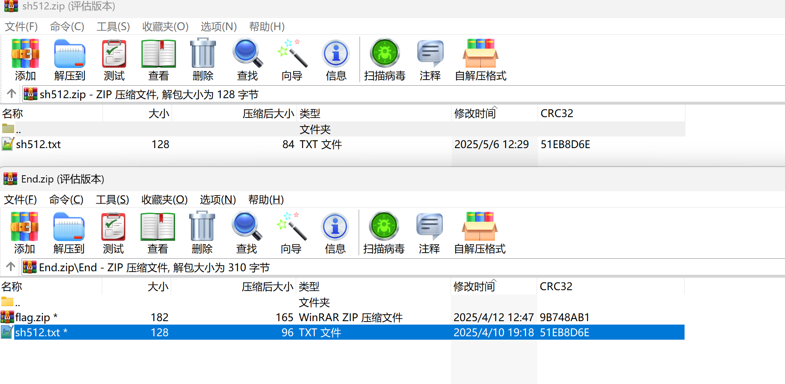
这时用bkcrack进行明文攻击
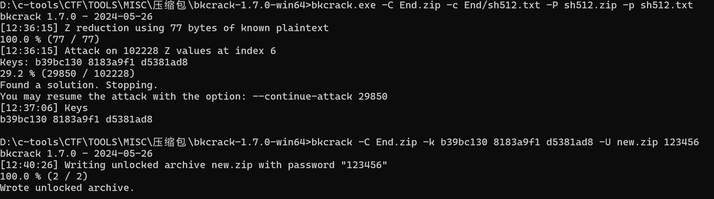
得到最终的flag.zip，直接解压会出现文件损坏
修改ushort frFileNameLength为8，enum COMPTYPE frCompression为DEFLATE得到新的zip
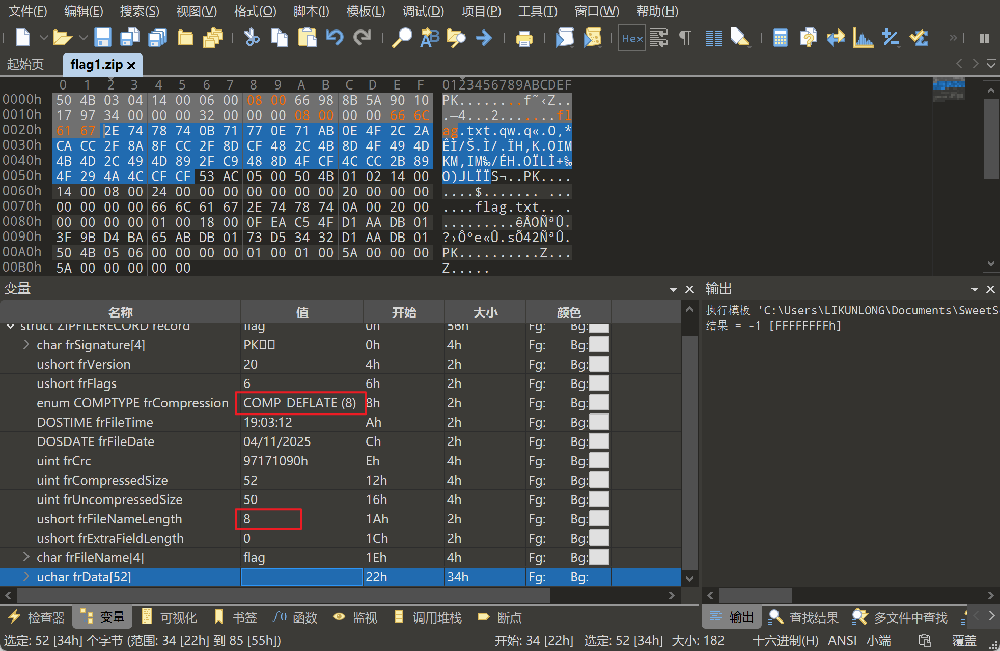
winrar解压还是报错，选择7zip解压得到flag
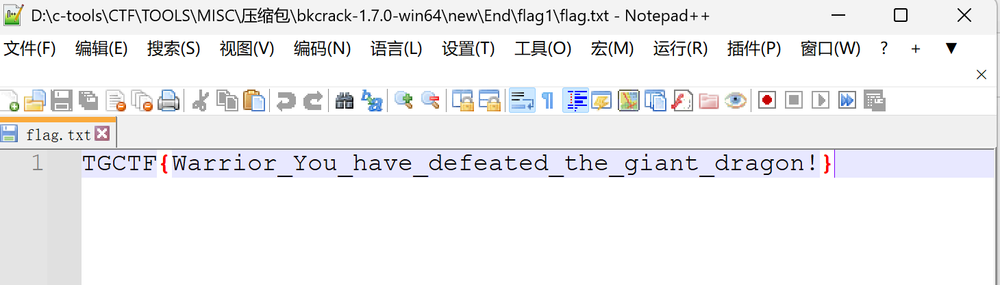
问卷大调查！
感谢大家的努力付出。截个图表示我参加过了。
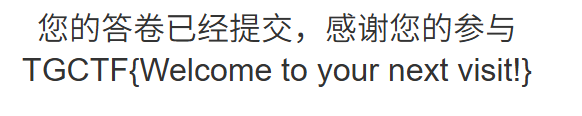
 wechat
wechat alipay
alipay